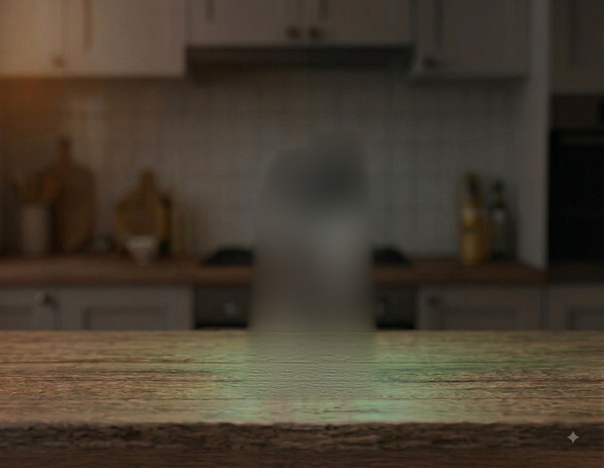
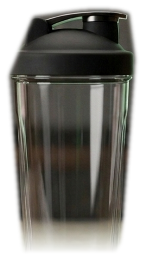

Five quick questions. Then we calculate your exact targets and build your plan around you — not a template.
👤Your name
⚖️Current bodyweight
📏Height
🎂Age
1 of 7
Your Goal
What are you building towards?
This shapes your calorie target and your programme. Be honest — there's no wrong answer.
🔥
Maximise Muscle
I want to get as big as possible
⚡
Lean Bulk
Build muscle, stay relatively lean
⚖️
Recomp
Build muscle and lose fat at the same time
🌱
Beginner
Under 1 year of training
📈
Intermediate
1–3 years of training
🏆
Advanced
3+ years of training
Your Setup
What do you have to work with?
We only show you exercises you can actually do. No point suggesting a barbell squat if you train at home.
🏋️
Full Gym
Barbells, cables, machines, everything
🔩
Dumbbells Only
No barbell, no cables
🪑
Dumbbells + Bench
Flat and incline pressing
🏗️
Barbell Only
No cables or machines
🏠
Home Setup
Dumbbells + resistance bands
➰
Resistance Bands Only
Nothing else needed
🤸
Bodyweight Only
Zero equipment
🌳
Outdoor / Park
Pull-up bar + bodyweight
🔄
Constantly Changing
Access varies day to day — show everything, I'll judge on the day
4days / week
1234567
Your Lifestyle
What does the rest of your day look like?
Training is only part of the equation — how active you are outside the gym changes your real calorie needs.
💻
Mostly Sitting
Desk job, minimal walking day to day
🚶
Lightly Active
On your feet sometimes, occasional walking
🏃
On My Feet All Day
Physical job, standing, or lots of walking
7.0hrs / night
357911+
The Honest Bit
Where do you usually fall down?
This is just between you and the app. The more honest you are the more useful your daily check-ins will be.
One Moment
Building your blueprint…
Crunching your numbers against your goal, your setup, and your schedule.
Calculating calorie & macro targets0%
Matching exercises to your equipment0%
Checking injury/limitation conflicts0%
Finalising your blueprint0%
Your Numbers
Here is your blueprint.
Your BMI
UnderNormalOverHigh
AREVIAX MASS
Dashboard
Workout Builder
Today's Session
Nutrition
Progress
More
Dashboard
Let's get to work
🔥 0 streak
⭐ 0 XP
🔥
🔷Repair✕
😴
🚶Mostly-sitting day today — sneak in a short walk. Keeps joints mobile and circulation up, separate from whatever training you're doing.✕
Good morning, Athlete!
Today
Push Upper — Day 1
This week's volume
Log your first set and this week's volume trend shows up here.
Today's Overview
Sessions
Calories
Protein
Carbs
Fat
0
“
Today's Perspective
—
— Areviax
This Week's Assessment
—
Rest Day
Recovery is when the growth happens.
🎉Session logged. Worth sharing?
Reminder: you noted at signup. Swap out anything that aggravates it, and stop if something feels wrong.
⚡Can't train properly today? Do a 3-minute rescue session instead
3-Minute Rescue Session
20 bodyweight squats
15 push-ups (knees down is fine)
30-second plank
10 walking lunges, each leg
This isn't a real training session — it's not going to build muscle. It's here purely so a genuinely bad day doesn't have to also break your streak.
🏃 Cardio & Sport
Running, cycling, football, swimming — anything that isn't sets and reps.
📋 Sessions Complete
⚡ Auto Build
🛠 Build Your Own
Session
Type
Time
Or get more specific — target exact muscles
Clear · use Type above
Upper Body
Lower Body
Core
Prefer more exercises over more sets each
Focus
Where are you training today?
Exercises
Save →
Your Session💾 Save as template
Saved Templates
Add Exercises
Session score
—
/100
This number reflects the priority weights below — the category bars further down don't.
Select a session type to see your score.
Muscle balance
—
Goal alignment
—
Fatigue order
—
Safety
—
Ready when you are. Tap Start when you walk in.
Session Timer
00:00
Optimal hypertrophy window
Rest Timer
Tap after each set. A timer pops up so you can rest properly between sets.
Focus sounds
Something to block out the gym noise and lock in — generated live, no earbuds sync issues, works offline.
How did that feel?
Nutrition is 80% of this. Track it for 2 weeks before changing anything else.
3🔥
Caloric Shield
🎯 Today's Feeder Quest
Today's macrosReset
🍷 0g alcohol today
Why these numbers?
Protein — 1g per lb of bodyweight. Training tears muscle fibres down; protein is the raw material your body uses to rebuild them thicker. This lands right at the top of what research shows actually helps — going higher doesn't build more muscle, it just crowds out the carbs your training needs.
Calories — a controlled surplus. Building new muscle costs energy on top of what you burn day to day. Too small a surplus and there's nothing to build with; too large and most of the extra goes to fat instead of muscle.
Logged today


Tap the shake — logs instantly
113 kcal · 13g protein
Or pick a different type →
🥜
Peanut butter (2 tbsp)
190 kcal · 8g protein
🥛
Whole milk (500ml)
310 kcal · 16g protein
🌰
Nuts (handful)
170 kcal · 5g protein
🍌
Banana + PB
280 kcal · 9g protein
🥣
Greek yoghurt
130 kcal · 17g protein
🥄
Oats + milk
350 kcal · 14g protein
Need help catching up on calories?
▼
📝
Log Food
Smart Log · Manual Entry
▼
Log food
Describe what you ate — we'll estimate the macros.
Generate full days against your targets, or build your own from scratch — full agency either way.
⚡ Generate Plan
🛠 Build My Own
How many days?
How much time do you have to cook?
How many meals a day?
Same daily target, packed into 3, 4, or up to 6 sittings — pick whichever fits how you actually like to eat.
This week
📋 Data Terminal
The scale doesn't show everything — track inches/cm too. Log whichever you have a tape measure for, you don't need all five every time.
Where you're headed
Log at least 2 weight entries to see your predicted progress.
Weight chart
Target: 0.5–1 lb per week. Slower is fine — faster risks fat gain.
Progress Photos+ Add photo
Day 1 vs Now
Sleep & Recovery
⭐ Where your XP came from
Volume · last 8 weeks
You vs day 1
Beyond the gym
Building something outside the gym too?
The same discipline that's driving your training numbers up works just as well on a side income — the Digital Product Blueprint and Income Playbook are built for exactly that.
Training breaks you down. This is where you actually grow.
🧠
CNS Readiness Test
Score your nervous-system fatigue
▼
CNS Readiness Test
Tap as fast as you can for 15 seconds. Scored against your own recent average — a quick, free proxy for nervous-system fatigue, not a lab-grade measurement.
15
😴
Sleep
Log hours, see your trend
▼
Sleep
This is where the actual growth happens
Log your sleep
Forgot to log yesterday?
Why it matters
Log a few nights to see your average and how it lines up with recovery.
Sleep chart
Aim for 7–9 hours — most growth hormone release happens during deep sleep.
⚡ Under 5 hours last night? — Do this today
Drop intensity
Same exercises, 1–2 fewer sets
Hit protein anyway
Recovery still needs the raw material
10 min daylight
Resets your clock for tonight
Skip the nap trap
20 min max, before 3pm only
No new PRs today
Under-slept + max effort = injury risk
Caffeine cutoff
None after 2pm — protect tonight's sleep
🌙
Sleep Architecture
REM / Deep / Light breakdown
SOON
🎵
Sleep Sounds
Rain, white noise, and more
▼
Sleep sounds
Plays continuously — no file to load, no ads, works offline. Pick a sound and a duration, then lock your phone.
—
🫁
Breathing
Box, 4-7-8, or deep breathing
▼
Breathing
Start
🧘
Body Scan
Guided relaxation, voice narrated
▼
Body scan
A voice guides you through relaxing each part of your body, head to toe. Lie down, close your eyes, and press play.
Reader
Ready
Voice speed
Voice volume
Browser voice — try a few, quality depends on your device
Sound volume
📖
Why Sleep Matters
The science, briefly
▼
Why sleep matters for muscle
Training breaks muscle fibres down — it's the stimulus, not the result. The actual rebuilding happens afterward, and most of it happens during deep sleep, when growth hormone release peaks and your body has the uninterrupted time to repair and add contractile protein to the fibres you trained. Consistently sleeping under 7 hours doesn't just make you tired — it caps how much of your training actually converts into size, no matter how well you eat or how hard you train.
💡
Practical Tips
Small changes, real impact
▼
Practical tips
Same time daily
Wake and sleep at consistent times, even on weekends. Your body clock matters more than raw hours.
Screens off 30 min before
Blue light delays melatonin release. Use this sound player instead of scrolling.
Cool, dark room
18–20°C is the sweet spot. Your core temperature needs to drop to fall into deep sleep.
Caffeine cutoff
Has a 5–6 hour half-life. A 4pm coffee is still a quarter-strength coffee at 10pm.
✅
Wind-down Checklist
Resets every night
▼
Wind-down checklist
🧾
Brain Dump
Get racing thoughts out
▼
Clear your headClear
Racing thoughts keep you up. Get them out of your head and onto the screen — you don't have to do anything with them tonight.
🔄
Recovery Beyond Sleep
Active recovery, deloads, stress
▼
Recovery beyond sleep
Sleep is the biggest lever, but not the only one. A few others worth building into your week:
Active recovery
A short walk or easy bike ride on rest days increases blood flow to sore muscles without adding fatigue.
Deload weeks
Every 6–8 weeks, drop volume by roughly half for a week. It's not a step backward — it's what lets the next block of training actually work.
Stress management
Chronic stress keeps cortisol elevated, which fights against the recovery you're trying to build. The breathing exercise above genuinely helps here — it's not just for falling asleep.
Your training week
Session modes
Full — 60+ mins
Everything. All exercises, full sets.
Short — 30–45 mins
Compound lifts only. The most important work.
Minimum — 15–20 mins
One key lift. Never zero. Keeps momentum.
This week
This board matches you against profiles at your exact stage — not people who started years ago — so the comparison is actually fair. (These are illustrative benchmarks, not live user data — real community rankings are coming.)
Join the leaderboard
Optional and anonymous by default. You only see people at the same stage as you.
The science behind everything the app asks you to do — written in plain English. You do not need to read it all at once. Come back whenever you want to understand the why behind a decision.
01The Hard Gainer Problem
The Actual Problem
It is never genetics. It is always the number.
Studies consistently show that naturally lean people underestimate their daily calorie intake by 30–50%. Not because they are lying to themselves — because human portion estimation is genuinely poor. A handful of nuts you did not log. A slightly larger bowl than you thought. Two glasses of whole milk you forgot about. These add up to the exact difference between growing and standing still.
The fix: Track accurately for just two weeks before changing anything. Most people discover they are eating 400–700 fewer calories than they thought — which puts them at maintenance instead of a surplus. Once you have an honest number, everything else can be adjusted properly.
02Mechanotransduction — How Your Muscles Detect Load
The Trigger
Your muscle cells physically feel the weight you are lifting.
Mechanotransduction is the process by which a mechanical force — the tension of lifting a barbell — is converted into a biochemical signal inside the cell. Specialised receptor proteins called integrins sit on the muscle cell membrane and deform when the fibre is placed under load. This deformation triggers a signalling cascade that travels to the cell nucleus and activates the genes that code for new contractile proteins.
The strength of this signal depends on two things: the amount of tension (heavier weights produce a stronger signal) and the duration of tension (the eccentric/lowering phase, where the muscle is under load while lengthening, creates the most potent signal of all).
This is why controlling the negative matters. Dropping the weight instead of lowering it — you are throwing away the most valuable part of the rep. A 3-second eccentric doubles the mechanotransduction signal compared to a 1-second drop.
03Muscle Protein Synthesis — How Growth Actually Happens
The Build Process
Growth happens for 24–48 hours after you leave the gym.
Muscle Protein Synthesis is the cellular process of assembling new muscle tissue from amino acids. Training spikes MPS — but that spike does not end when you finish your last set. MPS remains elevated for 24–48 hours after a session.
This has a critical implication for how you eat. Because MPS is elevated across the whole recovery window, protein consumed throughout the day contributes to growth — not just the shake you drink immediately after training. Spreading 150g of protein across 4 meals (roughly 35–40g per meal) feeds MPS more efficiently than consuming it all at once, because the body can only use approximately 30–40g per meal for synthetic purposes.
In 1994, a mother in Michigan lifted a 3,000-pound car off her child using adrenaline alone. Her muscles did not grow new tissue in that moment — but what it demonstrates is that the limiting factor for muscle output is rarely the muscle itself. It is the signal. Training is how you produce that signal deliberately, over time.
04Hormonal Signalling — Why Sleep is Non-Negotiable
The Delivery System
Training creates the signal. Sleep delivers it.
Heavy compound training triggers a systemic hormonal response. The hypothalamus signals the pituitary gland to release Growth Hormone and stimulate testosterone production. Both are anabolic — they instruct the body to build and retain muscle tissue.
80% of daily Growth Hormone is released during deep sleep, specifically in stages 3 and 4 of non-REM sleep. Research from the University of Chicago found that restricting sleep to five hours reduces testosterone levels by 10–15% per night — equivalent to ageing 10–15 years in a single week.
The practical consequence: You can eat perfectly and train hard and still plateau if you are consistently sleeping under 7 hours. Sleep is not recovery — it is the anabolic window itself. The training session is just the request. Sleep is when the body fulfils it.
05Progressive Overload — The Only Rule That Matters
The Fundamental Law
Your body only builds what it perceives as necessary.
Progressive overload is the principle of gradually increasing the demand placed on the body over time. Without increasing demand, the body has no biological reason to build additional muscle — it has already adapted to the current stress and considers it manageable.
The application is simple: add 2.5kg when you complete all reps with clean form. If you fail reps, stay at the same weight and focus on form. If you failed last session, stay again. The progression prompt in the app after every exercise tracks your response so you never have to think about this yourself.
The beginner advantage: In the first 6–12 months of training, anabolic sensitivity is at its lifetime peak. Beginners can add weight weekly and see results that take advanced lifters years to achieve. This window is extremely valuable. Consistency during this period produces compounding returns that are almost impossible to replicate later.
06Nutrition Timing and the Hard Gainer Protocol
The Protocol
When you eat protein is almost as important as how much.
Because MPS is elevated for 24–48 hours after training, protein consumed across the entire recovery window contributes to growth. But there is a ceiling: research shows the body can only use approximately 30–40g of protein per meal for muscle protein synthesis. Consuming 120g in one sitting means the excess is oxidised for energy rather than used for building.
The hard gainer protocol: Hit your total daily protein in 4 meals. Always have protein in the last meal before sleep — this feeds MPS during the overnight growth window when Growth Hormone is peaking.
The pre-bed meal is not optional. Casein protein (from cottage cheese, Greek yoghurt, or a casein shake) digests slowly over 6–8 hours, providing amino acids throughout the sleep window exactly when the hormonal environment is most anabolic. This one habit alone can meaningfully accelerate progress in hard gainers.
07The Beginner Advantage — Why Now Is Your Best Window
The Opportunity
The first year of training is unlike anything that comes after.
Beginner gains — sometimes called "newbie gains" — are not a myth. They are the result of extremely high anabolic sensitivity in muscles that have never been exposed to systematic progressive loading. Satellite cells (the stem cells of muscle tissue) are abundant and responsive. Motor neuron recruitment is improving rapidly with each session. The hormonal response to training is at its most powerful.
In practical terms: a beginner following a consistent programme with sufficient calories can gain 1–2 lbs of muscle per month — a rate that intermediate lifters spend years trying to recapture and advanced lifters consider impossible. Advanced lifters measure annual muscle gain in single-digit pounds.
The car story: In 2006, Tom Boyle watched a Chevrolet Camaro pin a cyclist against a pole. He lifted the car — approximately 3,000 lbs — for 45 seconds while the cyclist was freed. Boyle was not a professional athlete. He was an ordinary person whose body unlocked output that his muscles were never designed to produce under normal conditions. The lesson is not that you should train for emergencies. The lesson is that the gap between what your body is producing now and what it is capable of producing is enormous — and consistent progressive training is how you close it, permanently and measurably.
The window closes. Anabolic sensitivity declines after the first 1–2 years of consistent training. Every week you are in this phase and not training progressively, not hitting your calorie target, or not sleeping enough is a window closing. The app is designed specifically to make sure you do not waste this period.
08Practical Tools for Hitting Your Surplus, Every Single Day
Closing the Gap Day to Day
The science tells you what to do. This is how you actually do it when you're not hungry.
Everything earlier in this guide explains why a surplus matters. The problem most hard gainers actually run into is simpler and more physical: appetite runs out long before the calorie target does. These five habits exist specifically to close that gap.
Eat calorie-dense foods. Nuts, seeds, nut butters, avocado, cheese, and whole grains pack far more energy per bite than lean meats and vegetables alone — which matters when you're already fighting a limited appetite. A tablespoon of peanut butter alone is roughly 100 kcal in a mouthful.
Increase meal frequency. Three large meals ask your stomach to stretch further than it comfortably wants to, three times a day. Five to six smaller meals hit the same daily total with far less discomfort at any single sitting — genuinely easier to sustain for months, not just days.
Prioritise lean protein. Chicken, fish, eggs, tofu, and legumes give you the amino acids covered in Chapter 6 without the surplus being carried mostly by fat — the goal is new tissue, not just a heavier number on the scale.
Add resistance training. This is what decides where the surplus actually goes. Without a mechanical signal telling the body to build muscle (see Chapter 2), extra calories default toward fat storage instead.
Liquid calories deserve special attention. Solid food triggers stomach-stretch and satiety signals that liquids largely bypass — you can drink 600 kcal in the time it takes to feel three bites of a meal. A smoothie of whole milk, oats, a banana, and a scoop of peanut butter or protein powder can carry 500–700 kcal in one glass, in under two minutes, with almost none of the "I'm too full to keep eating" feeling solid food produces at that volume. This makes liquid calories one of the single most effective tools for a genuinely small appetite — swap in a milk-based smoothie or a protein shake instead of diet drinks, black coffee, or plain water between meals, and the daily gap between your target and what you actually feel like eating gets meaningfully smaller without any extra willpower.
📖
Want the full structured read-through?
The app teaches you the science exactly when you need it. The Mass Blueprint gives you the same material as one complete, structured guide — plus a personalised 12-week plan generated from your stats in a single sitting.
Every tier you've passed stays lit. The rest are waiting.
Trophy Road
Compare With Others
A real friends list — adding people by name and comparing privately — needs an account system and a server to match people up, which this version of the app doesn't have yet since everything runs locally on your device.
For now, the Leaderboard is the closest thing — it's anonymous and opt-in, but it'll show you where your stats sit against everyone else using the app.
Install as an App
Checking...
Backup Your Data
Everything — your stats, streak, PRs, achievements, statue progress — lives only on this device. Clear your browser data or switch phones and it's gone for good. Download a backup now and again every so often so you never lose it.
Automatic Cloud Backup
Not medical advice. Areviax provides general fitness and nutrition information for educational purposes. It is not a substitute for advice from a doctor, registered dietitian, or other qualified professional. Talk to a doctor before starting any new exercise or nutrition programme, especially if you have an existing health condition, injury, or take medication.
Privacy Policy
Last updated: 24 June 2026
What data this app collects
Areviax stores the information you enter directly: your name, body weight, training goals, workout logs, food logs, and progress over time. It does not ask for your email address, phone number, or any government ID.
Where your data lives
By default, everything is stored locally in your browser (using localStorage) on the device you're using. Areviax does not have a server and does not automatically transmit your data anywhere.
If you explicitly turn on Automatic Cloud Backup in your Profile, a copy of your data is additionally stored using Claude's persistent storage, tied to your Claude account, so it can survive you clearing your browser or switching devices. This only happens after you opt in, and you can turn it off at any time from your Profile page. This data is private to your account and is not shared with other users.
The Leaderboard
Joining the Leaderboard is optional. If you join, the display name you choose and your training stats (weight gained, streak, session count) become visible to other users of the app. You can stay anonymous and skip this entirely.
What we don't do
We do not sell your data. We do not share your data with advertisers or third parties. We do not use your data to train AI models. There are no ads in this app.
Your rights
You can export a complete copy of your data at any time from your Profile page (Download Backup). You can delete all your data by clearing your browser's storage for this site, or by using your browser's "clear site data" option. If you've enabled cloud backup, turning it off and asking us to delete it removes that copy too.
Children's privacy
Areviax is intended for users aged 16 and over. We do not knowingly collect data from children under 16.
Changes to this policy
If this policy changes, the "Last updated" date above will change too. Continued use of the app after changes means you accept the updated policy.
Contact
Questions about this policy: areviaxsupport@gmail.com
Terms of Service
Last updated: 24 June 2026
Acceptance
By using Areviax, you agree to these terms. If you don't agree, please don't use the app.
What this service is
Areviax is a self-tracking tool for workouts and nutrition, aimed at people trying to gain healthy weight and muscle. It provides general educational information, calculators, and logging tools. It does not provide personalised medical, dietetic, or professional fitness advice tailored to your individual health circumstances.
Your responsibilities
You're responsible for the accuracy of what you log. Calorie and macro estimates (including the Smart Log portion-size feature) are approximations, not laboratory-verified values. You should use your own judgement, and consult a professional, before making significant changes to your diet or training, especially if you have a pre-existing condition.
No professional advice
Nothing in this app constitutes medical, dietetic, or professional fitness advice. See the Health Disclaimer tab for more detail.
Limitation of liability
Areviax is provided "as is" without warranties of any kind. To the fullest extent permitted by law, we are not liable for any injury, illness, or loss arising from your use of this app or reliance on the information it provides.
Account & data
There is no account system — your data lives in your browser (and optionally, with your consent, in Claude's cloud storage). You're responsible for backing up your own data using the Download Backup feature.
Changes
We may update these terms or the app itself at any time. Continued use after changes means you accept the updated terms.
Governing law
These terms are governed by the laws of England and Wales.
Health Disclaimer
Last updated: 24 June 2026
This is not medical advice
Areviax provides general, educational information about training and nutrition for the purpose of healthy weight and muscle gain. It is not personalised medical advice and does not replace a consultation with a doctor, registered dietitian, or physiotherapist.
Before you start
Talk to a doctor before beginning any new exercise or nutrition programme if you: have a heart condition, have high or low blood pressure, are pregnant, have a history of disordered eating, have a joint, bone, or muscle injury, take medication that affects appetite, weight, or exercise capacity, or have any other condition that could make exercise or a calorie surplus unsafe for you.
Exercise carries risk
Resistance training and physical exercise carry an inherent risk of injury. Use correct form, choose appropriate weights, and stop immediately if you feel sharp pain, dizziness, or anything that doesn't feel right. If pain persists, see a doctor or physiotherapist before continuing.
Nutrition estimates are approximate
Calorie, protein, carbohydrate, and fat values in the Smart Log and food database are reasonable estimates based on typical food composition data, not laboratory measurements of the specific food you ate. Treat them as a guide, not a precise medical figure.
Listen to your body
If something in your training or eating doesn't feel right — physically or mentally — that's more important than any number this app shows you. Areviax is a tool to support your own judgement, not a replacement for it.
Your Details
Appearance
Early — most cards still look right in dark mode while light mode catches up card by card.
Goal & Training
Calories and macros recalculate automatically when you save.
What do you actually have?
Tick everything available to you — most gyms and home setups have some of this but not all of it.
Bodyweight exercises are always included, no need to tick anything for those.
Missed a day
⚠ Might aggravate an injury
⚠ That's a big jump
0
Day Streak
Last 12 weeks
Your weekly workout goal
Tap to change — same setting as Days per week in Settings.